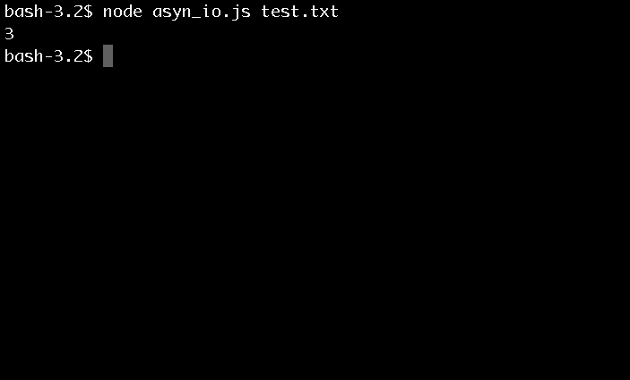

Background on what's happening here
First off. Welcome to the big boys league. After this you will have the power of Node.js at your keyboard finger tips.
Asynchronous, gives you the power to work on one task while another task completes or vice versa. Gone are the days of waiting for one process to complete, such as streaming a file, and then moving onto the next task.
Here is a real world analogy:
Synchronous:
Lets say you went to a farmers market to pick out some berries. There is a line of people behind you and when you walk up to purchase some berries, the cashier drops everything, walks out to the field and starts picking berries, they do not return to talk to or interact with anyone else, until the task is complete.
Does this seems like good business practice?
Asynchronous:
Now the same cashier takes your order. Right after taking your order, she takes the order of the person behind and you wait for your berries to be picked. And the cycle repeats the person after you waits for their berries to be picked. Once your berries are picked they are given to you and now you're on your merry way.
This concept is fundamental to programming with Node.js. There is no more waiting around and blocking other patrons at the farmers market, now everyone can get helped and this is done through what is called a "callback function."
fs.readFile(process.argv[2], callback(err, data));fs.readFile(process.argv[2], function(err, data) {
some more code here
});Lets repeat the last tutorial, but this time do it asynchronously
1) Use the same
test.txt vasyn_io.js2) Now this time we are going to utilize the callback function
var fs = require('fs');
fs.readFile(process.argv[2], function(err, data) {
if (err)
console.log(err);
var stringIt = data.toString();
var splitIt = stringIt.split('\n');
var lengthIt = splitIt.length - 1;
console.log(lengthIt);
});3) If everything went well you should see something like this:

As you can see, the internal logic of counting strings is similar to the synchronous method, however while this function is being ran, other functions can complete before it. **Remember the farmers market example **
The End
That ends the tutorial. I hope you found it very informative.